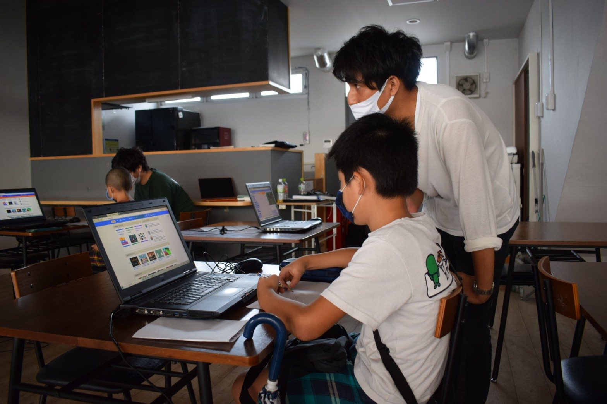
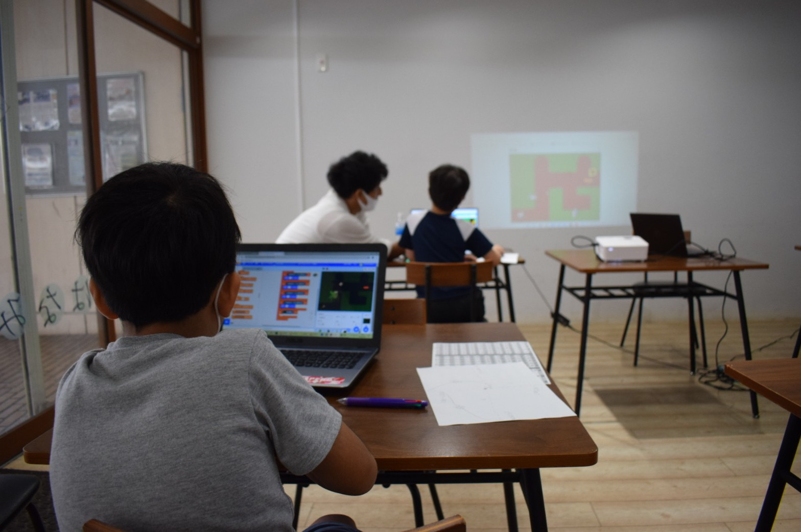
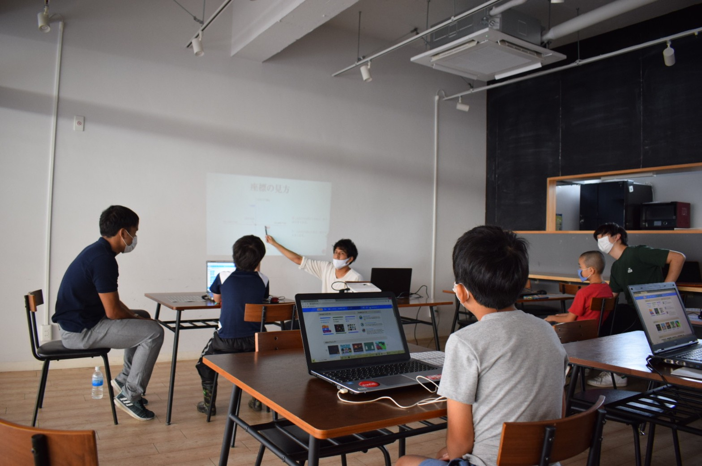

近年では子ども向けのプログラミングスクールが多く見られるようになりました。しかし、その多くはプログラミングの基礎の基礎（Scratchなど）のみを学ぶもので、実践的なWebサイト構築やアプリ制作を学習することはできません。一方、大人向けのプログラミングスクールは転職をゴールとしたものが多く、プログラミングの本質をじっくりと学べるものではありません。IT寺子屋では、まずは他の子ども向けスクール様と同様にScratchなどを利用してプログラミングの基礎を学習し、その後実際にWebサイトやアプリの制作に取り組みます。これは子どもにしかできない贅沢なプログラミング学習方法です。
ABOUT US
花見川IT寺子屋とは
私たちは千葉市花見川区を拠点とするプログラミング教室です。 「花見川を日本のシリコンバレーへ！」を合言葉に子どもたちが世界に大きな影響を与える人材になる一歩目を踏み出す支援をしています。世の中ではIoTが進み、コンピュータやインターネットなしではビジネス・政治・エンタメなどは成り立ちません。学校教育にも順次プログラミング教育が導入され、2022年度には大学入試共通テストでもプログラミングの問題が出題されます。プログラミングが当たり前となる中、人よりも少しだけ早くプログラミングの世界に飛び込んでみませんか？
FEATURE
特徴
地域唯一のWebプログラミング専門スクール！

最初の一歩が踏み出しやすい！リーズナブルな価格設定！

花見川IT寺子屋ではリーズナブルな価格でプログラミングの世界に飛び込むことができます。教材費や設備費、PCレンタル代も一切いただいておりません。他のスクール様と比べて約半額の価格でのレッスンを提供しています。また、初月レッスン終了時点で退会や受講中止を決めた方には、入会費・レッスン料を全額返金いたします。
それぞれの興味・能力に応じた少人数レッスン！

私たちの授業では講師が一方的に教えるのではなく、「次はどうしたら良いのか」「どうしてこのエラーが出てしまったのか」を生徒が主体的に考えることを大切にしています。また、最大6人のグループに別れてレッスンを行います。チームでの開発やディベート等もカリキュラムに組み込んでおり、「独学や家庭ではできない学び」を提供いたします。